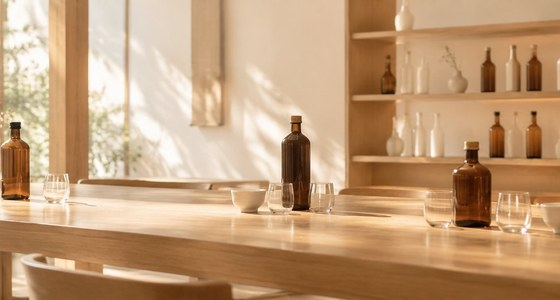
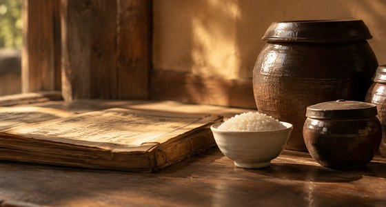
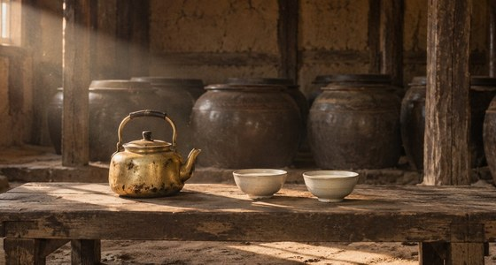

HISTORY
1970년부터
이어온 우리술
반세기 동안 국순당이 걸어온 길입니다.
현재 ~ 2015

현재 ~ 2015-
2025
09리브랜딩 생백세주 출시
02술복합문화공간 박봉담 오픈
-
2024
12대한민국 광고대상 온라인 영상 부문 대상 수상
09리브랜딩 백세주 출시
-
2023
11라인프렌즈 협업 캐릭터 막걸리, 일본·대만 수출
04대한민국 주류대상 대상 수상
-
2022
12백세주 30 출시
11려, 대한민국 우리술 품평회 증류주 부문 대상 수상
-
2021
12700만불 수출의 탑 수상
06환경부 지정 녹색기업 5회 연속 선정
-
2020
12500만불 수출의 탑 수상
011000억 프리바이오 막걸리 출시
-
2019
05국순당 횡성양조장, 농림축산식품부 '찾아가는 양조장' 선정
01려, 전통주 베스트 트로피 전체 1위
-
2018
09제21차 남북이산가족 상봉행사 만찬주 제공
051000억 유산균 막걸리 출시
-
2017
11야관문주 수리 출시
04강원대학교와 지역 양조사업 산학협력 MOU 체결
-
2016
08증류소주 려 출시
04백세주, 주류 최초 정부 선정 '우수문화상품' 지정
-
2015
10제20차 남북 이산가족 상봉행사 만찬주 제공
01백세주 클래식 출시
2014 ~ 2000

2014 ~ 2000-
2014
05우리술 복원 사업 24종 완성
03백세주마을 프랑스 파리점 오픈
-
2013
11전통주 최초 셀프형 전문주점 오픈
04대박 막걸리 출시
-
2012
09백세주2 출시
08아이싱 출시
-
2011
04우국생·국순당 쌀막걸리, 우리술 품질인증 1호·2호 획득
03우리 햅쌀로 빚은 국순당 쌀막걸리(CAN) 출시
-
2010
07환경부 지정 '녹색기업' 선정
04우리쌀로 빚은 국순당 생막걸리 출시
-
2009
04국순당 생막걸리 출시
03문화재청과 1문화재 1지킴이 협약 체결
-
2008
06강장 백세주, OECD 장관회의 공식 건배주 선정
05우리술 복원 사업 시작 - 창포주 복원
-
2007
09백세주, 대한민국 명품주 선정
07환경부 지정 환경친화기업 선정
-
2006
07북한 금강산 '백세주마을 금강산점' 오픈
04중국 유통법인 '북경백세상무유한공사' 설립
-
2005
05백세주 리뉴얼 출시
01국순당 미션헌장 선포
-
2004
11백세주 항암·위 보호 성분 함유 발표
06횡성공장 준공
-
2003
12배중호 대표이사, 올해의 BEST CEO 선정
03해태&컴퍼니 인수
-
2002
03철탑산업훈장 수상 - 대표이사 배중호
01백세주마을 강남점 오픈
-
2001
11한국전통식품 BEST5 대통령상 수상
10일본지사 업무 개시
-
2000
08코스닥시장 등록
06강남 삼성동 사옥 이전
1999 ~ 1970

1999 ~ 1970-
1999
12ISO9002 인증 획득
-
1998
03주류업계 최초 벤처기업 인증 취득
01퇴계원 막걸리공장, 수원양조장으로 이전
-
1995
06기업부설연구소 인정
03탁주 '아리랑' 일본 수출 개시
-
1994
12국산신기술마크(KT마크) 획득 - KT 제1호
01백세주·흑주 전국판매 개시
-
1993
07경기도 남양주 퇴계원양조장 인수
01강장백세주 출시
-
1992
12(주)국순당 출범 / 배중호 대표이사 취임
01백세주 출시
-
1988
05탁주양조기술 출간
05이조흑주 생산개시
-
1986
09수원공장 완공 및 정제효소 생산개시
07(주)배한산업 부설효소연구소 설립
-
1983
05주정용 GU 210 출고 개시
02(주)배한산업 설립
-
1975
01탁약주 기술 전문지 태양통신 창간호 발간
-
1970
04한국미생물공업연구소 설립 (배한산업 전신)
04밀기울 곡자 생산시판 개시